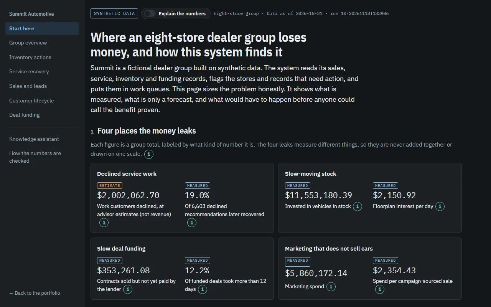
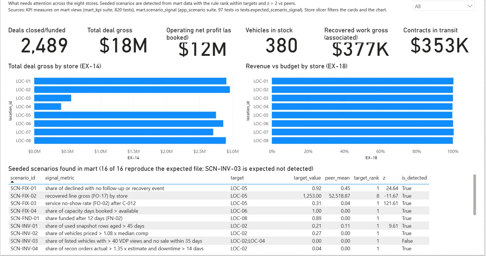

Summit Automotive Intelligence
A governed BI system for an eight-store car dealer group, checked figure by figure
Designed, specified and validated by me; built with AI-assisted development.
Synthetic data, fictional company
Role Architect & Validator Stack Databricks, SQL, Python and Power BI Status Complete. Built on synthetic data.
Overview
Where a car dealer group quietly loses money, and how to find it
A dealer group earns its profit in many small places and loses it in places nobody sees side by side. Summit is a made-up group of eight dealerships with three years of realistic records, built so that every problem hidden in the data has a known answer.




Problem
- Repairs customers said no toCustomers declined 6,603 recommended repairs, worth about $2.0 million at the advisors' estimates, and only 19% were ever done later.
- Cars that sit too long$11.6 million is tied up in cars on the lot, costing about $2,150 a day in loan interest.
- Sold cars the lender has not paid for$353,000 is waiting on lenders, and 12% of deals took more than 12 days to be paid.
- Marketing that does not sell cars$5.9 million spent, about $2,350 for every sale that came from a campaign.
Why it matters
What it could be worth
If the service team won back 10 more of every 100 declined repairs, that would add about $199,000 in gross profit. That is a forecast, not a result, and the pages show the test that would prove it.
Solution and architecture
- Sources
- Bronze
- Silver
- Gold
- Serving
- Uses
What the system does
It brings those records together, ranks the stores and the individual records that need attention, and gives each team a short work list. Service advisors get the customers to call back, the used-car manager gets the cars to reprice, and the finance office gets the deals to chase.
Implementation
How it is built
Each layer is built by generated SQL and tested before the next layer reads it.
- SourcesSynthetic dealer data71 files, 777,726 rows
- BronzeRaw rowsEvery file counted against the source
- SilverTyped and cleaned469 key checks
- GoldOne governed model696 tests
- ServingKPIs and queues91 measures, 1,066 tests
- UsesWork lists and Power BI4 applications and one report
Validation
Why the numbers can be trusted
Each figure is a test result from the last full run. Open a figure's note to see what was tested.
-
Serving-layer tests
1,321 of 1,321
Tests passed on the last full Databricks load
Every number the reports read was compared with an answer worked out in advance from the raw files.
- 820 KPI tests: every expected value, by store and for the group, matched to within 0.0001.
- 246 tests on the knowledge views, built from the assistant's question cases.
- 255 tests on the work queues, the scenario signals and the assistant's access rules.
Databricks load batch 10, 18 Nov 2026
-
Power BI reconciliation
819 of 819
KPI rows in Power BI match the data
The Power BI model was queried with DAX and every KPI value compared with the same value in Databricks, so the report cannot drift from the data.
- 819 KPI rows, by store and for the group, equal to within 0.0001.
- 204 of 204 values on the six generated report pages.
- The same check passed in 4 of 4 runs.
DAX check, 16 to 18 Nov 2026
-
Assistant evaluation
101 of 101
Scored questions answered from the right source, or refused
The knowledge assistant answered prepared questions. A pass means it cited the right current document, or refused when the reader's role was not allowed to see it. Answer wording is not graded, so a pass shows the right source was used, not that the answer was complete.
- A service advisor asking about lender funding paperwork is refused, because that document is limited to finance roles.
- A draft policy that is not yet approved is never used as a source.
- 4 of the 105 cases are withheld and reported, because their expected answers require a draft or an empty document version, which the approved rules never use. The rules were tuned on this same set, so a fresh set is still to come.
Assistant evaluation on Databricks, 18 Nov 2026
-
Planted scenarios
16 of 16
Seeded business problems found as expected
Sixteen business problems were hidden in the synthetic data on purpose. The detector must flag the stores it should, and pass over the one it cannot test.
- Store LOC-02 was given too many used cars over 45 days old (21% against about 11% at the other stores), and the detector flagged it.
- One scenario has too little data to detect, and the check confirms it is correctly not flagged.
Expected values set before the build, in the scenario test file
Checks before the pages are built
Six checks run on every build of the report pages, and the build stops if any of them fails. The SQL and the Power BI model are generated by script, never edited by hand.
- Power BI matches the model Pass819 KPI values read through DAX equal the serving layer.
- Queues match Databricks Pass408 queue rows and signals equal the last Databricks run.
- Scenarios found PassAll 16 scenario signals equal their expected values.
- Charts match their KPIs Pass72 monthly series and chart totals equal the measures they show.
- Data is fresh Pass33 freshness and file-hash checks confirm each layer was rebuilt after the one before it.
- Every figure explained PassEach of the 111 figures shown carries a plain-language note.
1,321 of 1,321 serving-layer tests
- What was tested
- Five Databricks test suites ran over the serving layer on the last full load, batch 10, with 820 KPI tests, 246 knowledge-view tests, 97 scenario tests, 119 queue tests and 39 assistant-view tests.
- How the expected answers were set
- A script computed the expected values from the raw files before the Databricks build, and the knowledge-view tests were built from the assistant's 105 prepared cases.
- What counted as correct
- Every expected value matched the Databricks value to within 0.0001, and coverage was checked as well.
- What failed
- Nothing failed in batch 10, and batch 10 gave the same results as batch 9. Failures in earlier batches are not recorded in the files read.
- What changed after
- Nothing is recorded as changed after batch 10.
- How to rerun it
python scripts/load/load_package.py --sink databricks (about 28 minutes with sign-in), or --sink duckdb for the offline rehearsal
819 of 819 KPI rows reconciled in Power BI
- What was tested
- DAX queries against the Power BI model were compared with the KPI values in Databricks for each store and for the group, along with 204 values on the six report pages.
- How the expected answers were set
- The Databricks serving-layer values; this check has no separate prepared answer.
- What counted as correct
- Each value is equal to within 0.0001.
- What failed
- Nothing failed, and the check passed in 4 of 4 runs between 16 and 18 November 2026.
- What changed after
- Nothing is recorded as changed.
- How to rerun it
Refresh powerbi/SummitAutomotive.pbip in Power BI Desktop, then python scripts/validation/check_powerbi_dax.py
101 of 101 scored assistant cases
- What was tested
- The knowledge assistant answered 105 prepared cases, of which 101 are scored and 4 are withheld. It is extractive and calls no language model.
- How the expected answers were set
- Each case in the data package carries an expected behavior, the roles allowed to see the answer and the document versions it must cite.
- What counted as correct
- An answer case passes when it is not refused, cites at least one required document version and contains no planted instruction text. A refusal case passes only when the assistant refuses. Answer wording is not graded, and on average an answer covers about 29% of its expected points.
- What failed
- None of the 101 scored cases failed. The four withheld cases expect a draft or an empty document version, which the approved rules never use as a source.
- What changed after
- The refusal threshold and a rule for unknown names were set using these same 105 cases, so a held-out set of about 20 new cases is recommended and not yet written.
- How to rerun it
python scripts/apps/knowledge_assistant.py eval --sink duckdb (offline), or --sink databricksThe command scores all 105 cases and counts the 4 withheld cases as expected refusals, so its total differs from the 101 shown here.
16 of 16 planted scenarios
- What was tested
- Sixteen business problems were seeded into the synthetic data, and each detected signal was compared with its expected signal.
- How the expected answers were set
- The expected signals were written before the build, each with its own detection rule, such as ranking first and sitting more than two standard deviations above the peer stores.
- What counted as correct
- The detected signal equals the expected one. One scenario is expected not to be detected because its data is too sparse, and it was not.
- What failed
- Nothing failed.
- What changed after
- Nothing is recorded as changed.
- How to rerun it
python scripts/site/build_site.py
Results
The system ranks the stores and records that need attention and turns them into work lists for the service team, the used-car manager and the finance office. On the last full load every one of the 1,321 serving-layer tests passed, the Power BI report matched the data on 819 of 819 KPI rows, and all 16 planted scenarios behaved as expected. The value of acting on the lists is still a forecast, about $199,000 in gross profit if 10 more of every 100 declined repairs were won back, until outcome tracking shows a realized result.
Limitations and lessons
Honest limits
The pages say plainly what the evidence does not yet support.
- Data
- Synthetic; no real dealer's figures
- Action results
- Sample figures until outcome tracking is built
- Assistant score
- Measured on the set its rules were tuned on
The next phase tracks each recommended action through to a verified result, so the return can be shown as realized rather than potential.